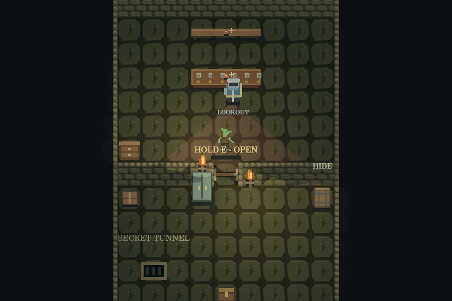

Small goblin.
Big haul.
Sneak through guarded rooms, pack whatever fits, and get your loot back to the lair.
Free browser prototype · keyboard & touch · no account

Explore rooms, peek through doors and keep an eye on the guards.
Your sack has nine squares. Choose what’s worth carrying home.
Bank valuables, craft gear and choose abilities at the campfire.
Home is where
the loot goes.
Begin in your lair. Progress saves in this browser when storage is available.
On a phone, turn sideways and use the on-screen controls.
- Prepare at the lair.
Pack from the stash, craft at the workbench and choose a destination at the map table.
- Board the minecart.
Interact with the cart to board. The countdown sends you on your raid.
- Search, steal, sneak.
Hold E to search furniture or open doors. Tap E for visible coins and keys. Use hiding barrels to get out of sight.
- Bring it home.
Return to the raid cart, deposit loot from your sack, then hold E to board and escape. Getting caught costs you the run’s loot.
Ready to try your luck?
A small sack. Plenty of tempting things.
About this build
This is a playable development build. The solo game, room trials and workshop run entirely in your browser. Multiplayer needs a separate server and isn’t available on this site. Some art is still placeholder art. Workshop drafts are separate from game progress; export them to keep your changes.